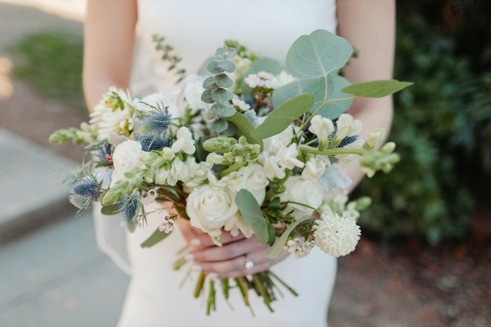
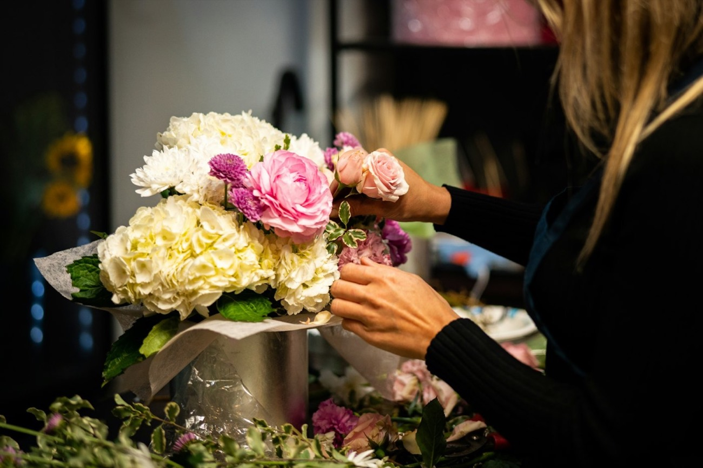
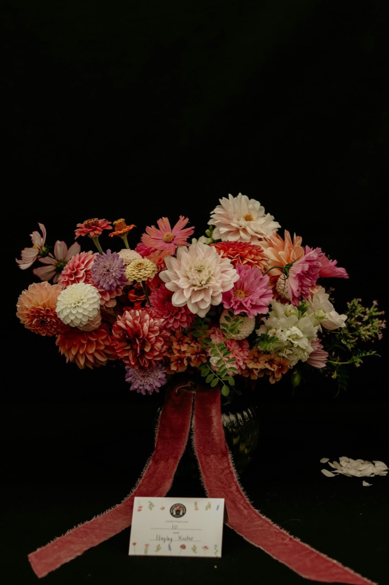
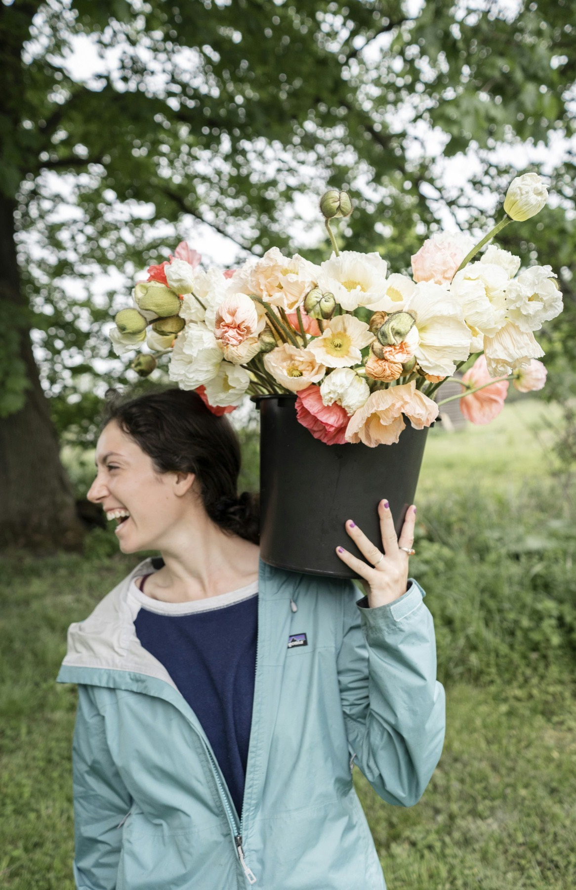
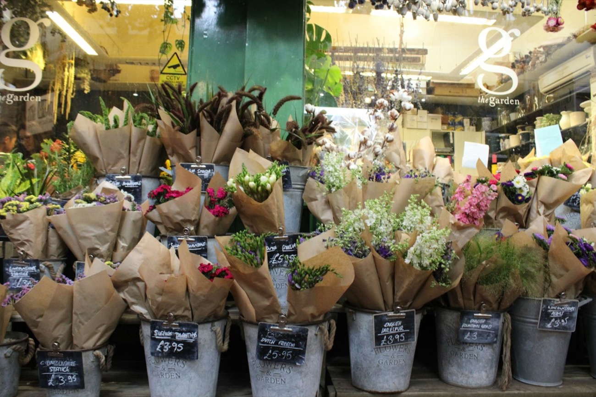
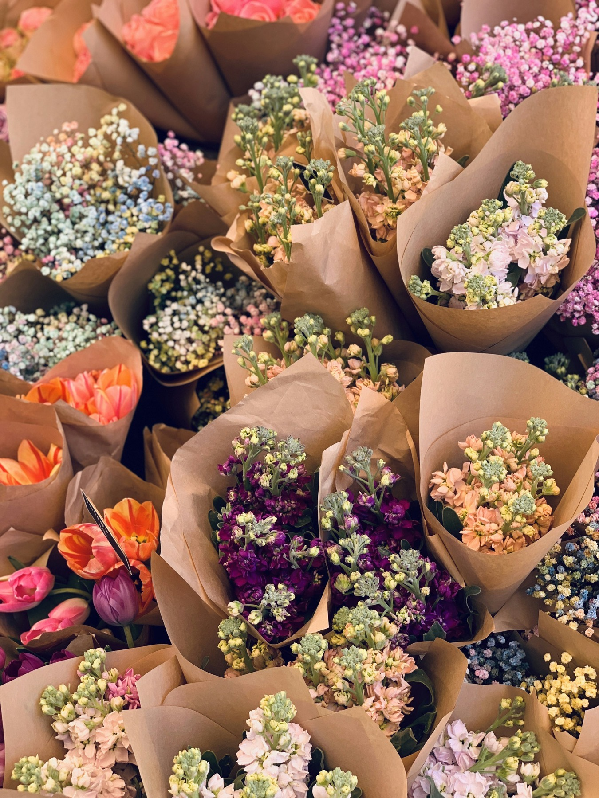
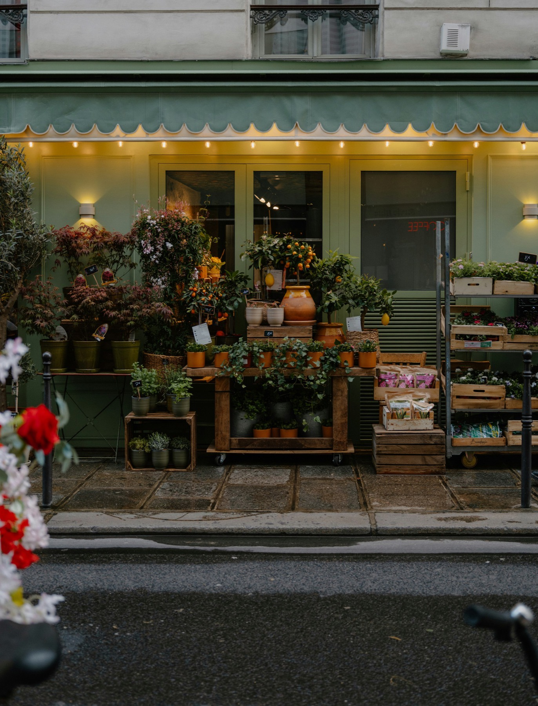

Śluby
Bukiet panny młodej, butonierki i kwiaty na stoły. Przynieś zdjęcie sukienki albo sali, dobierzemy kolory przy wiadrach.
od 180 zł
Pn–sob 7:00–19:00, niedziela do 14:00
Stragan i mały sklep na Rynku Wildeckim w Poznaniu. Kwiaty z giełdy co dwa dni, każdy bukiet w szarym papierze, ze sznurkiem i bilecikiem.
Lista zmienia się co dwa dni
Ceny za łodygę. Dodaj łodygę prosto z wiadra, a kreator poniżej od razu wstawi ją do bukietu.
Kreator bukietu
Dodawaj łodygi, a bukiet ułoży się w papierze tak, jak wiążemy go przy straganie. Na bileciku napiszemy ręcznie, co chcesz.
Dodaj pierwszą łodygę
0 / 80, napiszemy ręcznie
Każdy bukiet wychodzi z bilecikiem
Na zamówienie
Napisz albo przyjdź do straganu. Resztą zajmiemy się same, łącznie z wazonami i dowozem.

Bukiet panny młodej, butonierki i kwiaty na stoły. Przynieś zdjęcie sukienki albo sali, dobierzemy kolory przy wiadrach.
od 180 zł

Świeże kwiaty co poniedziałek, w Twoich wazonach. Stare zabieramy na kompost.
od 120 zł tygodniowo

Spokojnie, bez pośpiechu i bez zbędnych wstążek. Dowozimy na cmentarze w Poznaniu.
od 140 zł

Przez trzy tygodnie mamy je z polskich ogrodów, potem znikają do następnego roku. Zostaw adres, napiszemy w dniu pierwszej dostawy.

Skąd biorą się kwiaty
Nie trzymamy kwiatów w chłodni tygodniami. Kupujemy co dwa dni, małymi partiami, i to widać w wiadrach.

List przypięty przy kasie
Stragan na Rynku Wildeckim prowadziła moja mama od 1994 roku. Ja przejęłam go w 2015 i dobudowałam do niego mały sklep z drzwiami, żeby kwiaty nie marzły w styczniu.
Nie sprzedajemy bukietów w celofanie. Każdy owijamy w szary papier i wiążemy sznurkiem, bo tak było zawsze i bo papier można potem wyrzucić do makulatury.
Jeśli nie wiesz, co wybrać, powiedz po prostu, dla kogo. Resztę zrobimy same i dopiszemy bilecik.
Ewa Nowicka
Ostróżka, druga generacja na Wildzie · ewa@ostrozka.example
Ceny brutto
| Łodygiwedług listy obok | od 4 zł |
| Szary, kremowy albo grafitowy papier | w cenie |
| Sznurek jutowy | w cenie |
| Lniana wstążka | 5 zł |
| Bilecik, pisany ręcznie | w cenie |
| Zioła z Baranowaw doniczce | 12 zł |
| Wrzos, jesienna skrzynka | 45 zł |
| Paproć | od 35 zł |
| Wiązanka okolicznościowa | od 140 zł |
| Wieniec na zamówieniedwa dni | od 320 zł |
| Odbiór przy straganie | 0 zł |
| Wilda i Łazarz | 15 zł |
| Reszta Poznania | 30 zł |
| Biura, co poniedziałek | w cenie |
Oddzwonimy przed 19:00
